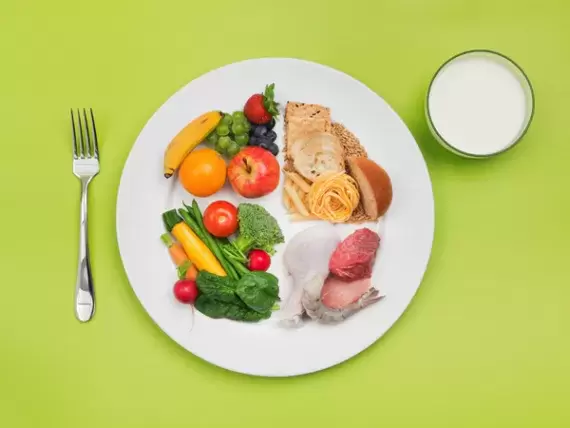

HOW TO CHANGE YOUR DIET WHEN YOU START LIFTING WEIGHTS
Basic dietary changes
When trying to get your body into healthier shape, it is important to make some basic dietary changes.
First, try not to drink sugar calories, such as sodas and fruit juice, and limit intake of processed foods,
including packaged and fried fast food. These foods are low in fiber, protein, and micro-nutrients and high
in empty calories.
Next, aim for lean protein sources, such as chicken, fish, and turkey. These options are low in saturated
fat and provide adequate protein and heart-healthy fats.
As far as carbohydrates go, aim to make half of your grains whole grains, which will provide fiber and
deliver essential minerals. Lastly, fresh or frozen fruit are good examples of carbohydrates that can
provide energy to sustain you during exercise
Ideal meals and timing
To ensure your body is equipped to accomplish a quality workout, you will also want to pay attention to when
you are eating. Take a look at the tips below for ideal meal timing and nutrient delivery.
Before exercise:
Eating prior to a workout not only increases energy levels, but may also increase the amount of calories
burned.
Eat your snack or light meal 60-90 minutes before entering the gym. This will help reduce abdominal pain and
discomfort. Fats and fibers take longer to break down, so try to consume those three hours before
weight-lifting.
Carbohydrates are the body is primary fuel source. This is especially true for weight lifting. Carbohydrates
that have a low glycemic index (like nuts, beans, fruits, and sweet potatoes) will sustain you through your
weight-lifting workout because they take longer to digest.
Good snack examples include a handful of almonds with half of a banana, or apple slices with one tbsp peanut
butter.
